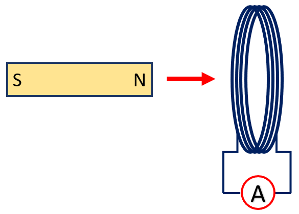
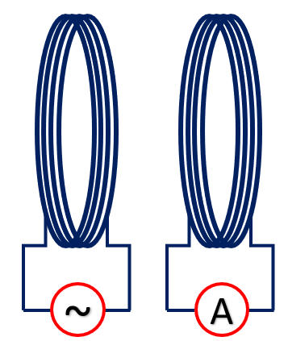
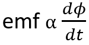
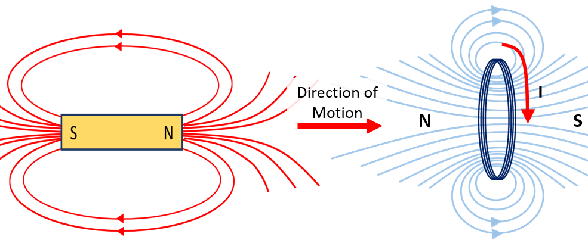

HOME BLOG EBOOKS ABOUT CONTACT SHOP
In 1831, Michael Faraday performed some experiments with a bunch of bar magnets and some coils, and in the process came up with some laws. In one of his experiments, he moved around a bar magnet through a coil connected to an ammeter. He observed that the ammeter showed deflection.

In another experiment, he placed 2 coils close to each other, one connected to a varying current source and the other to an ammeter. Here too the ammeter showed some deflection.

Based on these experiments Michael Faraday formulated 2 laws, which is now known as the Faraday’s Laws. These laws introduce us to the phenomenon called Electromagnetic Induction.
According to the Faraday’s first law, when a conductor is placed in a varying magnetic field, an EMF gets induced across the conductor and if the conductor offers a closed circuit then an induced current flows through it.
And Faraday’s second law states that, the induced EMF is directly proportional to the rate of change of magnetic flux.

The important thing to note here is that the magnetic field must be varying. A stationary magnetic field cannot induce a magnetic field. Which brings us to our next question, how do we obtain a varying magnetic field?
There are two ways to obtain varying magnetic field:
One is relative spatial movement, that is if the distance between the magnet and the conductor keeps changing, the magnetic field also keeps changing and induction is possible. (as in faraday’s first experiment)
The other is to vary the magnetic field originating from the source itself. This is not possible with permanent magnets, but it’s easy to do using current carrying coils. All we need to do is to vary the current through the coils, the magnetic field also varies as a result. (as in faraday’s second experiment)
Now, here’s a thought. If the second experiment works, then can we just place many coils in the proximity of a current carrying coil and induce current in all of them? Yes, that’s possible. But unfortunately there’s a catch in all this, called mutual induction. When we induce a current in the secondary coil, this current will itself produce a flux in the secondary coil. This flux will link with primary coil inducing an EMF and a current in the primary, this is a mutual process.
The problem is that the current induced back in the primary will be in the opposite direction to the original applied current in the primary, thus reducing the overall effect. This is a direct consequence of the law of conservation of energy. In electromagnetics, it’s called the Lenz’s law. The Lenz’s law states that “the direction of the electric current which is induced in a conductor by a changing magnetic field is such that the magnetic field created by the induced current opposes the cause that induced it”. Lenz's Law ensures that the electrical energy of the primary coil is reduced by the same amount as the energy gained by the secondary coil. In other words, an induced effect is always such as to oppose the cause that produced it.
Consider the figure below. In this case the north pole of the bar magnet is moving towards the coil and this induces an emf and a current in the coil. To conserve energy, the coil must oppose this motion of the bar magnet and this can be done if the left side of the coil acts as a north pole (north- north repulsion). Therefore, the current is induced in the coil in such a way that a north pole is created on the left side of the coil. If instead the north pole of the bar magnet was pulled away from the coil, then to resist this motion the coil would need to create a south pole on its left side in order to attract the north side of the bar magnet and in turn stop it from moving away. So the current in the coil is induced accordingly.

Taking the lenz’s law into account, our equation for the induced emf can be modified as,
Here N denotes the no of turns in the coil.
Electromagnetic induction is the principle behind the working of devices like transformers, motors etc.